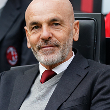

Web Programming
M
H
W
2
Quiz della personalità basato sul Milan
Domanda 1: Quale di questi giocatori ti piace di più?

Domanda 2: Quale allenatore preferisci?

Domanda 3: Quale partita vorresti rivivere dal vivo?